Cosmología I: el universo en expansión
Las ecuaciones de Einstein aplicadas al cosmos completo, las tres evidencias de que el Big Bang realmente ocurrió, el fondo cósmico de microondas como fotografía del universo a los 380.000 años, y la ecuación de Friedmann: contenido y curvatura deciden la historia — y el destino — de la expansión.
Esta clase inicia el "viaje más largo" del curso: la cosmología, el estudio del universo como un todo. La herramienta es la relatividad general — las mismas ecuaciones que describían un agujero negro sirven para describir el cosmos entero — y la sorpresa histórica es que esas ecuaciones, aplicadas al universo, nunca dan un universo quieto: exigen que se expanda o se contraiga. La clase presenta la evidencia de que efectivamente ocurrió un Big Bang, y para un ingeniero el terreno es cómodo: hay una ecuación diferencial (Friedmann), una condición de borde (el contenido del universo), un análisis de Fourier (el espectro del CMB) y un problema de conversión de unidades que entrega, en una línea, la edad del universo.
Einstein y la constante cosmológica
Las ecuaciones pedían un universo dinámico; la época pedía uno estático.
No hubo cosmología física hasta que la relatividad general entregó las herramientas para estudiar la evolución del cosmos. Y apenas se aplicaron las ecuaciones de Einstein al universo completo, el resultado fue incómodo: el universo tenía que ser dinámico — expandiéndose o contrayéndose. Como la astronomía de la época creía en un universo estático (infinito en espacio y tiempo), Einstein agregó a mano un término, la constante cosmológica, para forzar una solución estática. Pocos años después se descubrió que el universo sí se expande. Ese ir y venir entre teoría y observación — dice la clase — es exactamente lo que hace avanzar a la ciencia.
La masa distorsiona el espacio y el tiempo, y esa distorsión es lo que llamamos gravedad. Cerca de un cuerpo masivo el espacio se "aprieta" y el tiempo corre más lento; lejos, el espacio se estira y el tiempo corre más rápido. Consecuencia directa: la luz que sale de un pozo gravitacional se corre al rojo (redshift gravitacional) — la longitud de onda crece a medida que la radiación se aleja de la fuente masiva. Esta idea reaparecerá en versión cosmológica: aquí será el espacio en expansión el que estire la luz.
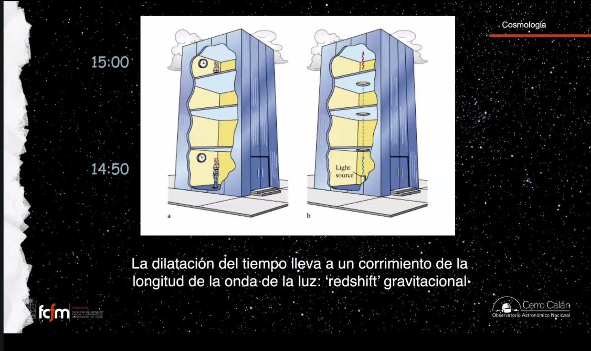
Los tres pilares del Big Bang
Tres hechos observacionales independientes que apoyan que el Big Bang ocurrió.
Es fácil tomarse el Big Bang como un chiste de serie de televisión; el objetivo de estas dos clases es mostrar la evidencia. Hay tres observables independientes:
- La expansión del universo (ley de Hubble–Lemaître) — esta clase.
- La existencia del fondo cósmico de microondas (CMB) — esta clase.
- La nucleosíntesis primordial de hidrógeno y helio, y sus proporciones exactas — la clase 5.
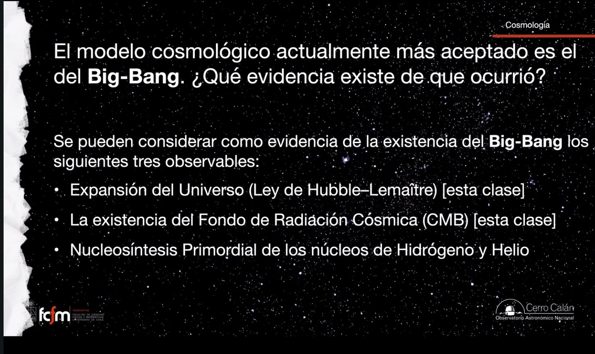
La ley de Hubble–Lemaître
Dos mediciones por galaxia — distancia y corrimiento — y una correlación que cambió todo.
Un error histórico entregó todos los laureles a Edwin Hubble, cuando el sacerdote y astrónomo belga Georges Lemaître descubrió la expansión de manera independiente y simultánea (e incluso parece que hubo acciones deliberadas para silenciar su artículo). La Unión Astronómica Internacional corrigió el registro: hoy es oficialmente la ley de Hubble–Lemaître.
El diagrama original: cada punto es una galaxia, con su distancia en un eje y su corrimiento Doppler (expresado como velocidad, en km/s) en el otro. Casi todos los corrimientos son hacia el rojo — casi todas las galaxias parecen alejarse — y, pese a la dispersión de esas primeras mediciones, hay una correlación clara: más lejos, más rápido. La interpretación no es que todas las galaxias arranquen de la nuestra (no somos especiales): es que el universo se expande y, visto desde cualquier galaxia, todo lo demás se aleja.
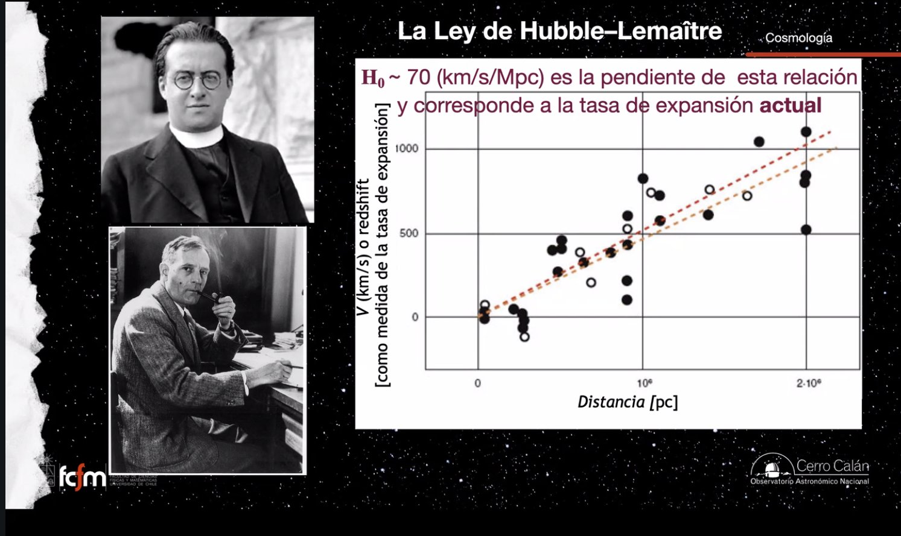
Qué se expande (y qué no)
El espacio crece; las galaxias no se mueven. Y usted no está creciendo.
El experimento de la fotocopia ampliada
¿Por qué "más lejos = más rápido"? Es geometría pura, y se puede comprobar en casa: tome una imagen cualquiera (una foto de galaxias, su perro, lo que sea), cópiela ampliada por un factor, y haga coincidir ambas copias en cualquier punto — ese punto es "usted observando". El desplazamiento de cada objeto entre las dos imágenes es mayor mientras más lejos está del punto de coincidencia. Si la imagen chica es el universo "antes" y la grande el universo "después", cada observador ve que todo se aleja, y lo lejano se aleja más rápido. Sin que nada se haya movido.
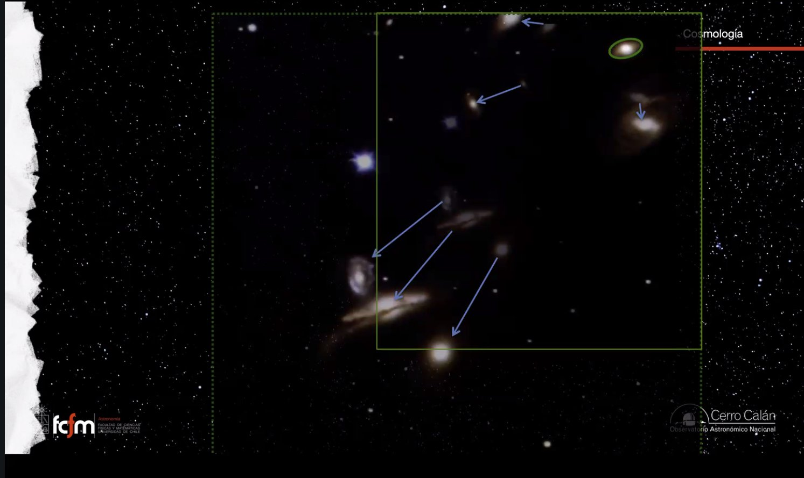
No es una velocidad: se crea espacio
Medimos el corrimiento con el efecto Doppler, y el Doppler habla de velocidades — pero aquí no es una velocidad real. Entre un instante y otro, cada galaxia "no se movió a ninguna parte": lo que creció fue el espacio entre ellas. En palabras de la clase: no se crea materia ni energía — se crea espacio, distancia que antes no existía. Y la pregunta "¿dentro de qué se expande el universo?" no tiene cabida: el universo no está contenido en un espacio mayor; el espacio es lo que hay entre los cuerpos, y eso es lo que crece.
Las regiones desacopladas
Entonces, ¿me estoy alejando de ustedes? ¿Estoy creciendo? No: la expansión es del universo a gran escala, no de las regiones gobernadas por su propia gravedad. Cuando una región acumula suficiente contenido (veremos el criterio: la densidad crítica), se desacopla de la expansión y pasa a vivir su propia dinámica, dictada por su gravedad y su movimiento interno. Nuestra galaxia se desacopló hace mucho; el Grupo Local también — por eso la Vía Láctea y Andrómeda no se alejan: van derechito a chocar. El universo es como un gran globo que crece, con "burbujas" pequeñas que ya no se expanden, mientras el espacio entre esas burbujas sigue creciendo.
La expansión es un reescalamiento global de coordenadas, no una traslación de objetos: como cambiar el zoom de un canvas en lugar de mover cada elemento. Y las regiones desacopladas son como procesos con su propio reloj local que dejaron de sincronizarse con el clock global. El redshift cosmológico mide directamente el factor de escala: la señal (longitud de onda) se estira exactamente con el "zoom" del universo entre emisión y recepción.
¿"Se crea" espacio no viola la termodinámica? No se crea materia ni energía, solo espacio. Y ojo: el universo no es un sistema conservativo — los fotones del CMB pierden energía constantemente por la expansión (su longitud de onda se estira). Volveremos sobre esto.
¿La tasa de expansión es constante? En el tiempo, no. Pero en un momento dado, todo el universo se expande con la misma tasa — si viajáramos a una región que ni siquiera podemos ver, mediríamos la misma tasa que aquí.
La edad de Hubble: 1/H₀
Pasar la película al revés: si la tasa fuera siempre la misma, ¿cuándo empezó todo?
Si el universo se expande, hacia atrás en el tiempo las galaxias estaban cada vez más juntas; antes eran estrellas apiladas, antes átomos, y en el extremo un estado tremendamente denso y caliente: el Big Bang. Primer cálculo de su edad: supongamos que la tasa de expansión siempre fue la actual. Entonces el tiempo transcurrido es simplemente el inverso de la constante de Hubble:
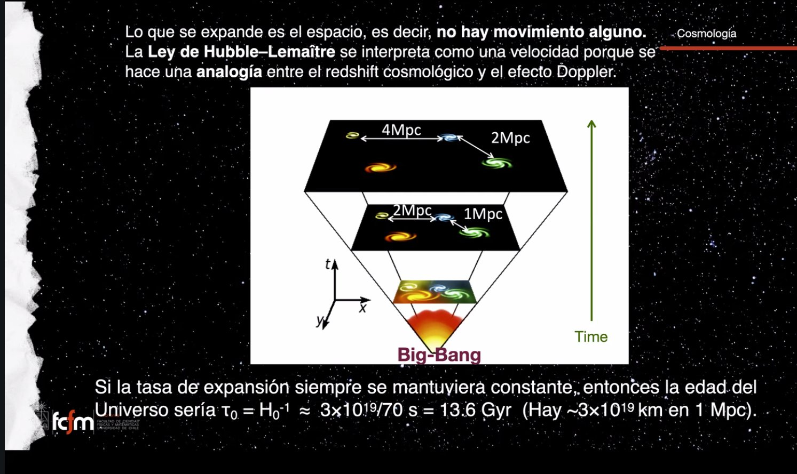
El CMB: descubrimiento accidental
Predicho en los años 40, encontrado en 1965 por dos ingenieros que no sabían qué era.
El segundo pilar. Cuando en los años 40 se modeló cómo habría sido el universo post–Big Bang (Alpher, Herman y Gamow), se predijo que debía quedar un fondo de radiación cósmica — aunque lo buscaron en una frecuencia equivocada. En 1965, Penzias y Wilson, trabajando con la antena de Holmdel de los laboratorios Bell, midieron una señal que llegaba igual desde todas las direcciones, no importa hacia dónde apuntaran. No tenían idea de qué era — el paper se titula, esencialmente, "una medición de exceso de temperatura de antena" (llegaron a culpar a las palomas que anidaban en la antena) — y aun así se llevaron el Premio Nobel 1978. Habían encontrado el CMB que otros andaban buscando.
Espectro de cuerpo negro casi perfecto con T = 2.725 ± 0.002 K. Es radiación remanente de cuando el universo tenía unos 380.000 años, a redshift z ≈ 1100 (la profesora lo redondea a 1000 para no olvidarlo). Y no fue un instante: la transición tomó su tiempo — es un proceso, no un flash.
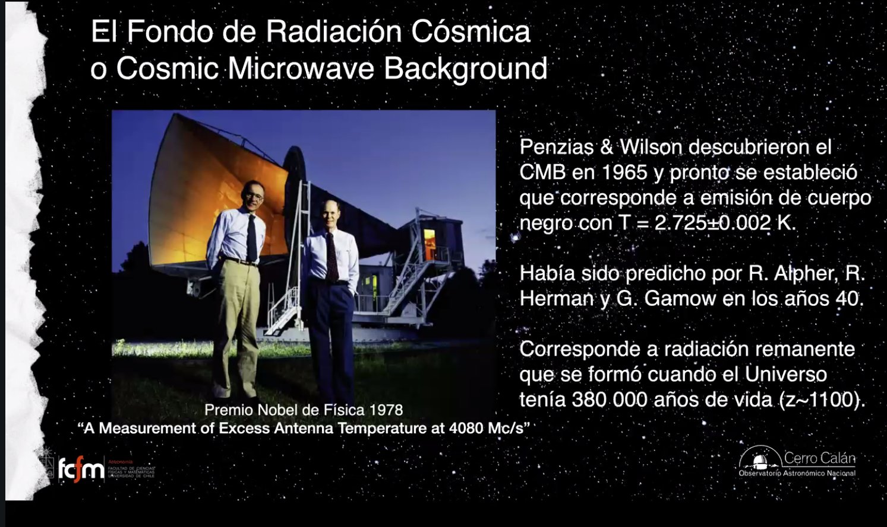
Tres misiones espaciales han mapeado el CMB con resolución creciente: COBE (1989, la primera en detectar estructura en la radiación), WMAP (2001) y Planck (2009). Las mismas estructuras persisten de mapa en mapa — solo que cada vez se ven con más detalle. Los colores de esos mapas son "de fantasía": marcan dónde la temperatura medida es una pizca más caliente o más fría.
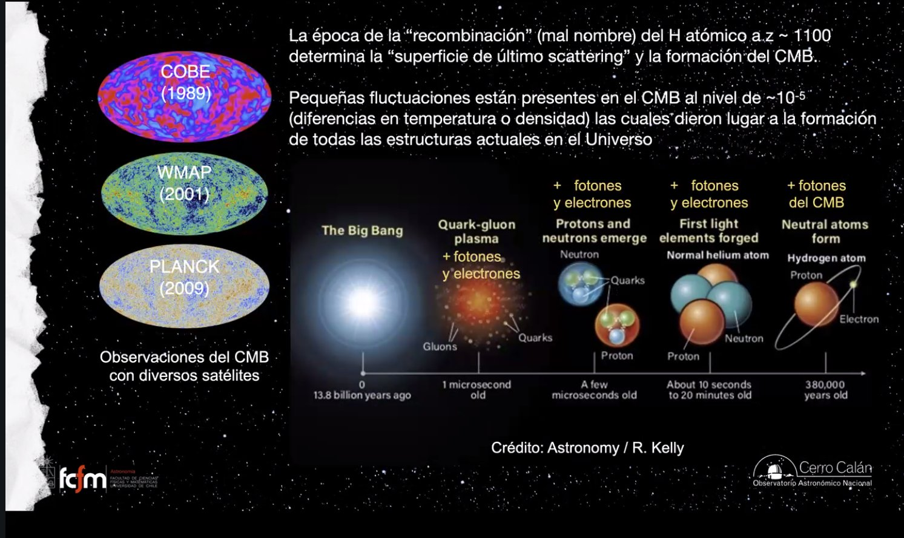
La recombinación: el origen del CMB
El momento en que el universo se volvió neutro y la luz quedó libre.
¿Por qué tenía que existir el CMB? Porque es el resultado natural de la evolución del contenido del universo. La secuencia, extrapolando el Big Bang hacia adelante:
- Al comienzo: las mayores temperaturas y densidades posibles. La predicción es "de locos": las primeras partículas no tenían masa y todas viajaban a la velocidad de la luz, hasta que la fuerza primordial se dividió en fuerzas específicas. Al separarse la electromagnética de la nuclear débil aparece el bosón de Higgs, que entrega a las partículas la propiedad de tener masa — y con masa, ya no pueden viajar a c.
- ~1 microsegundo: una sopa — plasma de quarks y gluones, más fotones, electrones… y hay que echarle también las partículas de materia oscura.
- Pocos microsegundos: los quarks se agrupan de a tres para formar nucleones: protones y neutrones.
- Entre 10 segundos y 20 minutos: protones y neutrones se unen en núcleos atómicos (helio; un protón solo ya es un núcleo de hidrógeno). Todavía no hay átomos: es un plasma de núcleos positivos, electrones negativos y fotones rebotando entre ellos.
- ~380.000 años: la recombinación — por primera vez los núcleos capturan electrones y el universo se vuelve neutro. Los fotones, que hasta entonces vivían chocando con partículas cargadas (son los portadores de la fuerza electromagnética), quedan libres y salen a viajar. Ese es el nacimiento del CMB: el desacople entre radiación y materia.
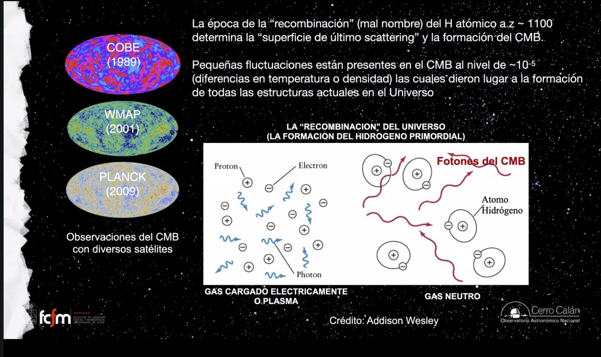
El umbral de los 13.6 eV
¿Por qué justo entonces? Los fotones del universo nacieron como la radiación más energética concebible (rayos gamma) y la expansión los fue estirando y enfriando. Mientras su energía superó los 13.6 electronvolts (longitud de onda 912 Å) que se necesitan para ionizar el hidrógeno, cada átomo que se formaba era destruido de inmediato: se formaba y se rompía, se formaba y se rompía. Cuando la radiación bajó de ese umbral, el hidrógeno quedó "tranquilito, neutro" y los fotones siguieron su camino. En ese momento los fotones del universo eran comparables a los de las estrellas O y B — los mismos ultravioleta que hoy mantienen ionizadas las regiones H II. Es exactamente la misma física.
El CMB se creó en todas partes
El "cascarón" que nos rodea no es un lugar: es una selección de fotones.
Los diagramas del universo observable confunden: muestran el CMB como una esfera lejana que nos rodea, y uno concluye "el CMB se creó allá lejos". Falso. La recombinación fue una transición en todo el universo a la vez — aquí mismo, donde está la Tierra, se crearon fotones del CMB que salieron viajando en todas direcciones. Lo que representa esa esfera es otra cosa: de todos los fotones creados en todas partes, los que nos llegan justo ahora son los que partieron desde una distancia tal que su viaje duró exactamente la edad del universo desde la recombinación. Un observador en otra galaxia tiene su propio cascarón — y a él le están llegando ahora fotones que se crearon aquí.
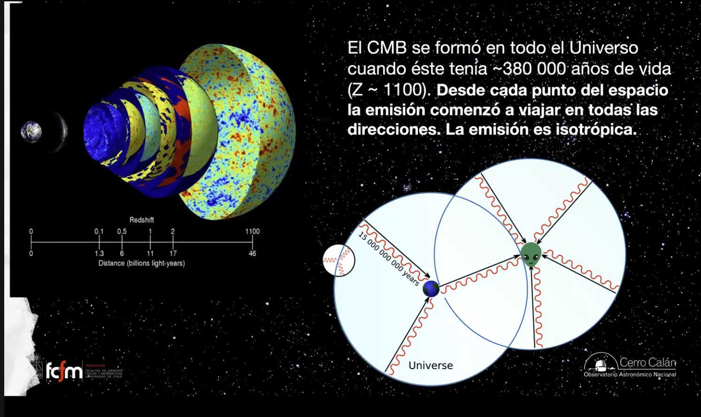
Principio cosmológico y ecuación de Friedmann
Una suposición de simetría y la ecuación diferencial que gobierna la expansión.
El principio cosmológico
Hay algo que los cosmólogos deben asumir sin poder comprobarlo empíricamente — "casi un acto de fe", aunque en el fondo es minimizar variables: el principio cosmológico establece que el universo, a grandes escalas, es homogéneo (igual en todas partes) e isotrópico (igual en todas las direcciones). No son lo mismo: una pared de ladrillos es homogénea pero no isotrópica (tiene direcciones privilegiadas); un patrón de rayos radiales es isotrópico desde el centro pero no homogéneo. La consecuencia práctica es enorme: sin lugares ni orientaciones preferidas, la expansión se describe con un solo número — H, sin dependencia de posición ni dirección.
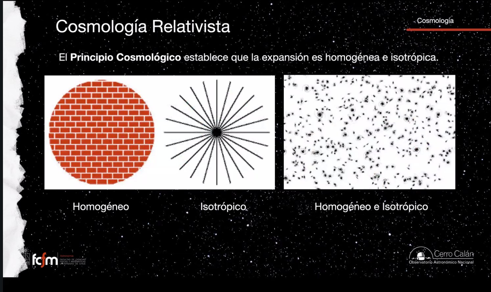
La ecuación de Friedmann
De la relatividad general (más la hipótesis de las geodésicas) sale la ecuación que describe la historia de expansión — la misma donde Einstein metió su término "a dedo":
El primer término del lado derecho es una constante (8πG/3c²) multiplicada por ε, el contenido del universo: "échenlo todo al saco" — protones, neutrones, electrones, neutrinos, fotones, ondas gravitacionales, materia oscura, todo. Se pasa de densidad de energía a densidad de masa con ε = ρc². El segundo término es la curvatura. Conclusión estructural: la historia de la expansión queda determinada por el contenido del universo y por su curvatura. Eso es lo que los cosmólogos necesitan medir, y hay dos caminos: el universo local (z ~ 0–1, como hizo Hubble) y el CMB (z ~ 1100). Uno de los problemas actuales más interesantes es que ambos caminos no coinciden del todo.
Los cosmólogos dividen el contenido en dos. Calientes (relativistas): todo lo que viaja a c o casi — esencialmente los fotones del CMB (lejos, la mayor cantidad de fotones del universo: los de todas las estrellas juntas son "una pistosis" al lado) y los neutrinos (tienen masa, pero tan pequeña que van casi a c). Frías (no relativistas): todo el resto — materia oscura, y los protones, neutrones y electrones en forma de estrellas, planetas, gas y polvo. Lo más rápido en esta categoría: galaxias en cúmulos, a ~1000 km/s.
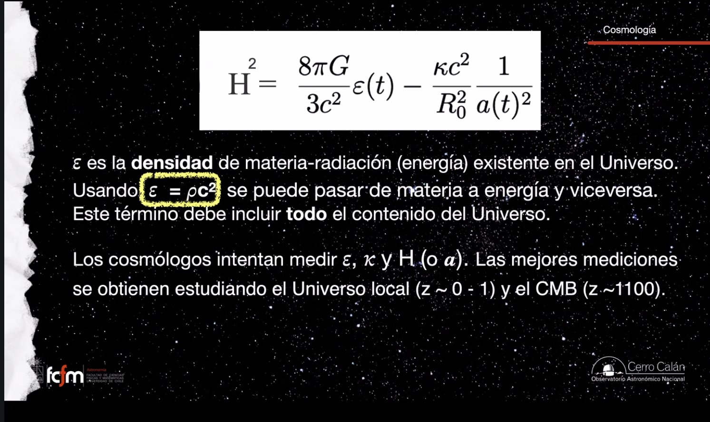
Densidad crítica, Ω y curvatura
¿Cuánto contenido se necesita para que el universo sea plano? Cinco protones por metro cúbico.
Pregunta: ¿nuestro universo, como un todo, es curvo? A un universo justo, pero justo plano se le llama universo crítico: en él κ = 0 y el término de curvatura muere. Despejando la densidad necesaria con H₀ = 70:
Ahora, a contar. El censo del contenido (fotones, electrones, protones… todo el saco) da ρ₀ ~ 7×10⁻³⁰ kg/m³; incluyendo la materia oscura sube a ~2×10⁻²⁷ kg/m³. Contra los 8×10⁻²⁷ requeridos: falta un factor ~4. Se define entonces el parámetro de densidad:
Visualizar las curvaturas
La curvatura del universo como un todo no requiere un espacio mayor que lo contenga (extraño, sí). Las visualizaciones clásicas en 2D:
- Positiva (cerrado): la esfera. Dos caminantes que parten paralelos hacia el Polo Norte terminan encontrándose. Los ángulos internos de un triángulo suman más de 180°. Dos rayos láser paralelos terminan convergiendo.
- Negativa (abierto): la silla de montar — curvada de una manera en una dirección y de otra en la perpendicular. Los triángulos suman menos de 180°. Rayos paralelos terminan divergiendo.
- Cero (plano/crítico): triángulos de 180° exactos; rayos paralelos se mantienen paralelos para siempre.
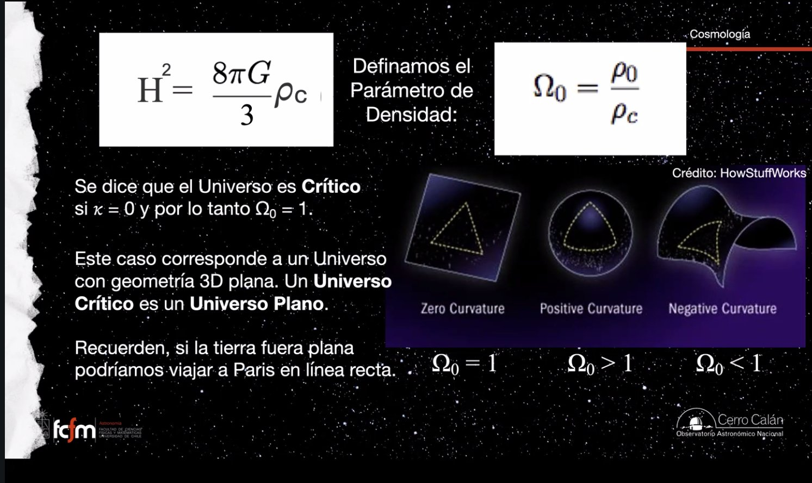
Sí, totalmente: es el mismo criterio. Si un pedazo del universo alcanza la densidad crítica, se vuelve una región "cerrada" que se desacopla de la expansión — el caso de nuestra galaxia y nuestro cúmulo. Y nosotros estamos lejos, lejísimos por encima: la densidad crítica es 5 protones por metro cúbico y en esta sala hay trillones de trillones.
Geometrías, edades y destinos
El contenido frena la expansión: cada Ω implica una historia y un final distintos.
Resolver la ecuación de Friedmann para cada caso entrega la tabla completa (edades calculadas respecto al tiempo de Hubble τH = 1/H₀):
| Caso | Curvatura / geometría | Historia y destino | Edad del universo |
|---|---|---|---|
| Ω₀ = 0 (vacío) | — | Sin masa ni energía: tasa de expansión constante para siempre. No existe, pero es la referencia. | τ₀ = τH |
| 0 < Ω₀ < 1 (abierto) | Negativa (silla de montar) | Se expande por siempre, frenándose sin detenerse. | ⅔ τH < τ₀ < τH |
| Ω₀ = 1 (crítico) | Cero (plano) | El caso límite exacto: "un gramo más y es cerrado, un gramo menos y es abierto". | τ₀ = ⅔ τH |
| Ω₀ > 1 (cerrado) | Positiva (esfera) | La expansión se frena, se detiene y se revierte: colapso final en un Big Crunch. | τ₀ < ⅔ τH |
Fíjense en el patrón: todos los casos realistas son más jóvenes que el tiempo de Hubble. El contenido del universo solo puede frenar la expansión (gravedad atrae); por eso, hacia atrás, el universo se expandía más rápido que hoy y llegó al presente en menos tiempo del que sugiere la tasa actual. Este dato — que la materia solo desacelera — será la clave del gran giro de la clase 5.
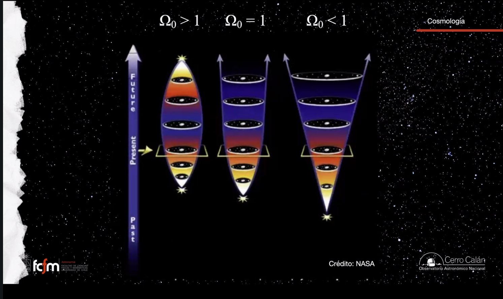
¿Cómo saber en cuál vivimos? Dos estrategias: (1) contar — el censo de fotones, protones, electrones y materia oscura que ya hicimos; (2) mirar hacia atrás — al futuro no podemos mirar, pero la historia de expansión sí se puede reconstruir observando lejos, y cada caso tiene un pasado distinto. Eso se empezó a hacer en los años 80 y 90, y el resultado (clase 5) fue una sorpresa mayúscula.
El espectro de potencias del CMB
Una transformada de Fourier del cielo entero — y una predicción que calza exacta.
El CMB no es perfectamente parejo: tiene regiones un cachito más calientes y otras un cachito más frías. Ese "cachito" es minúsculo: las variaciones son cinco órdenes de magnitud menores que la temperatura promedio (ΔT/T ~ 10⁻⁵). COBE fue la primera sonda en detectarlas. Y esas fluctuaciones diminutas son las semillas de todas las estructuras actuales — galaxias incluidas.
Para caracterizarlas se toma la transformada de Fourier esférica del mapa: en lugar de preguntar "¿qué hay en cada punto?", se pregunta "¿cuántas estructuras hay de cada tamaño angular?". El resultado es el espectro de potencias: pocas estructuras de ~90°, un peak dominante en ~1 grado, y picos secundarios menores hacia ~0.25°.
Entendiendo la física del universo en sus primeros 380.000 años (que es física simple: una sopa de partículas y fotones), se puede predecir el tamaño característico de las estructuras al momento de formarse el CMB: aproximadamente 1 grado en el cielo. Y es exactamente lo que se mide. La clase quedó aquí con un suspenso: "pero hay un problema con eso" — la resolución llega en la clase 5, y cambia todo el censo del universo.
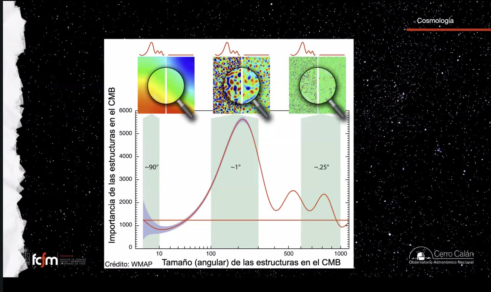
Es exactamente un análisis espectral de señal: el mapa del CMB es la señal (2D sobre la esfera), y el espectro de potencias es su descomposición en "frecuencias espaciales" (armónicos esféricos, el análogo de la FFT sobre S²). El peak en 1° es como encontrar la frecuencia dominante de una vibración: te dice cuál era el modo de oscilación principal de la sopa primordial — y su posición codifica la geometría del universo, porque la curvatura actúa como una "lente" que reescala todos los ángulos observados.
Explorar conceptos
Dos calculadoras: la edad de Hubble a partir de H₀, y el explorador de universos según Ω₀.
Conceptos clave
Tabla de repaso rápido.
| Concepto | Idea esencial |
|---|---|
| Constante cosmológica | Término que Einstein agregó a mano para forzar un universo estático; lo retiró al descubrirse la expansión (y reaparecerá en la clase 5 como energía oscura). |
| Tres pilares del Big Bang | Expansión del universo, existencia del CMB y nucleosíntesis primordial (proporciones de H y He). |
| Ley de Hubble–Lemaître | v = H₀·d, con H₀ ≈ 70 km/s/Mpc: pendiente del diagrama distancia–corrimiento; descubierta independientemente por ambos; renombrada por la IAU. |
| Expansión del espacio | No es movimiento: se crea espacio entre los cuerpos. "Más lejos = más rápido" es efecto geométrico de un reescalamiento global. |
| Regiones desacopladas | Zonas que superaron la densidad crítica local dejaron de expandirse y se rigen por su propia gravedad (la galaxia, el Grupo Local — por eso chocaremos con Andrómeda). |
| Tiempo de Hubble | τH = 1/H₀ ≈ 13.6 Gyr: edad si la tasa hubiera sido siempre la actual; cota superior para universos con contenido. |
| CMB | Cuerpo negro a T = 2.725 ± 0.002 K, isotrópico; predicho en los 40, descubierto por accidente por Penzias y Wilson (1965, Nobel 1978). |
| Recombinación | A z ≈ 1100 (~380.000 años) el universo se vuelve neutro y los fotones quedan libres: nace el CMB. Mal nombre — mejor "desacople radiación-materia". |
| 13.6 eV / 912 Å | Umbral de ionización del hidrógeno: mientras los fotones lo superaban, ningún átomo sobrevivía; al bajar de ahí, el H quedó neutro (misma física de las regiones H II). |
| El "cascarón" del CMB | El CMB se creó en todas partes; la esfera que "vemos" es solo el conjunto de fotones cuyo viaje termina justo ahora en nuestro detector. |
| Principio cosmológico | El universo es homogéneo e isotrópico a gran escala ⇒ la expansión se describe con un solo número H(t). |
| Ecuación de Friedmann | H² = (ȧ/a)² = (8πG/3c²)ε − κc²/R₀²·a⁻²: la expansión queda determinada por el contenido (ε) y la curvatura (κ). |
| Componentes calientes/frías | Relativistas (fotones del CMB, neutrinos) vs. no relativistas (materia oscura, bariones en estrellas/gas/polvo). |
| Densidad crítica | ρc = 3H₀²/8πG ≈ 7.9×10⁻²⁷ kg/m³ ≈ 5 protones/m³; el censo da un factor ~4 menos. |
| Ω₀ y curvatura | Ω₀ < 1 abierto (negativa, triángulos < 180°), Ω₀ = 1 plano (180°), Ω₀ > 1 cerrado (positiva, > 180°, Big Crunch). |
| Espectro de potencias del CMB | Transformada de Fourier esférica de fluctuaciones de 10⁻⁵; peak dominante en ~1°, tal como se predice. |
Exámenes de práctica
10 exámenes de 5 preguntas: 3 de alternativas autocorregibles + 2 de respuesta escrita con solución propuesta.
- Examen 01Einstein y los tres pilares
- Examen 02La ley de Hubble–Lemaître
- Examen 03El espacio que se expande
- Examen 04La edad de Hubble
- Examen 05El descubrimiento del CMB
- Examen 06La recombinación
- Examen 07El CMB en todas partes
- Examen 08Friedmann y el principio cosmológico
- Examen 09Densidad crítica y curvatura
- Examen 10Integrador